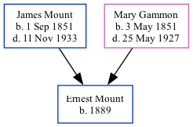

Ernest Mount 1889 -
[ Home ] | [ Calendar ] | [ Surnames Index ] | [ Family History ]A laborer bricklayers and the child of James Mount (a stoker at gasworks) and Mary Gammon (a laundress), Ernest Mount, the second cousin three-times-removed on the mother's side of Nigel Horne, was born in Herne Bay, Kent, England in 18891,2.
Throughout his life, he lived at King Street in Herne Bay on Apr 5, 18911, on Mar 31, 19012 and on Apr 2, 19113.
Parents
- James was born on Sep 1, 1851
- Mary Julia was born on May 3, 1851
Citations
- 1891 England, Wales & Scotland Census - Findmypast (was age 2 and the son of the head of the household)
- 1901 England, Wales & Scotland Census - Findmypast (was age 12 and the son of the head of the household)
- 1911 Census for England & Wales - Findmypast (was age 20 and the son of the head of the household)
Family Tree
Generated by Ged2Site. Last updated on Jul 20, 2025